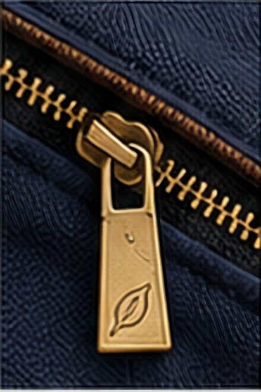
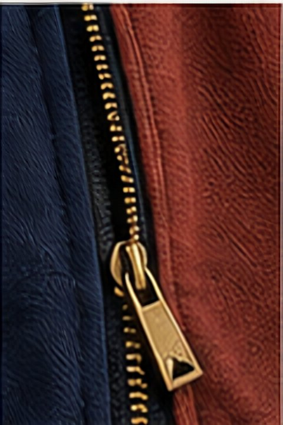
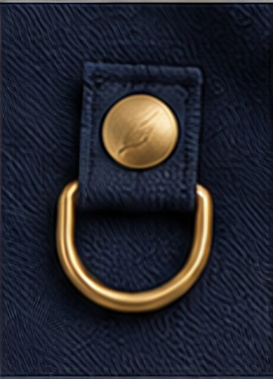
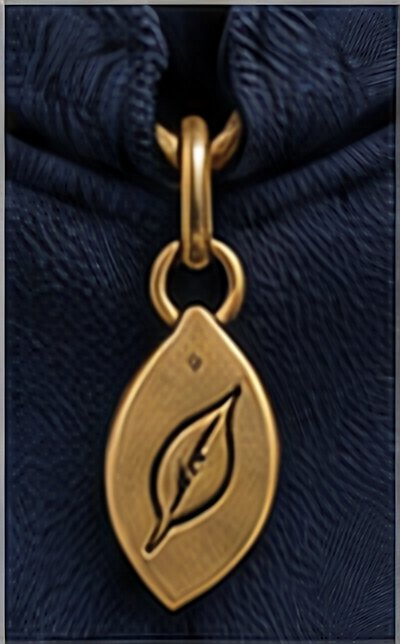
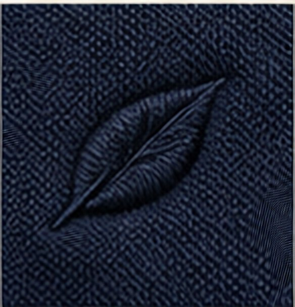

The Set
Made for you
Change this
Detach · Attach · Swap · Adapt · Express
The parts, up close
Every part is real, every join is engineered

Sleeve zip
Attachment snap

Side zip channel

Hem loop

Leaf charm

Embroidered mark